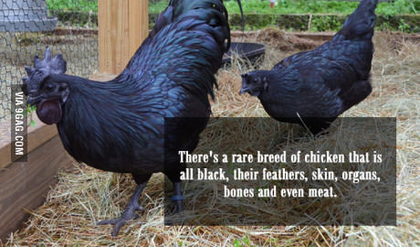

_______________________________________
THE FARM CHICKEN
_______________________________________
Now here is the kind of chicken found in the farm. Actually very sweet, despite the color. This breed is extremely rare that one might thnk that they are from some kind of sci-fi movie.
_______________________________________
THE FARM DOG
_______________________________________

Tusker is an Anatolian Shepherd Dog and a breed native of Turkey, where he was developed as a shepherds companion and livestock guardian. He was bred to resemble the size and color of the livestock he defended so predators would not detect him among the flock. Sometimes called the Anatolian Karabash Dog, he is a fiercely loyal guard dog and a large, impressive dog breed, weighing 120 to 150 pounds at maturity.